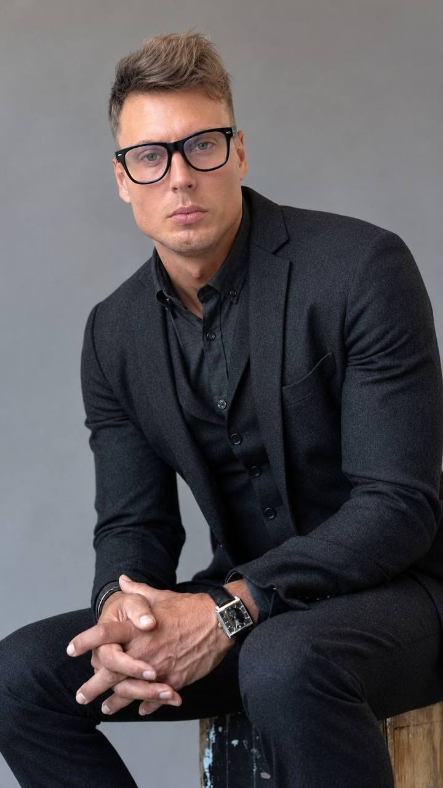

AxonLeads
Freelance opportunities, draft proposals, and CRM.
AI-assisted development
Since 2023, I've been developing AI-enabled web applications and automation at PT SATVA JOIN THE FAMILY (Satva JTF), Indonesia.
Experience building websites of varying complexity and working with Figma and pen.dev.
Vietnam · UTC+7 · English B1

Freelance opportunities, draft proposals, and CRM.
An international project: a real estate agent workspace with a property catalog, selections, and client links.
A Gemini companion.
An internal Play experiment.
A workflow and four Markdown skills for product copy, Russian SEO editing, content research, and release acceptance.
A Python video pipeline using Pillow and ffmpeg, with optional AI captions. Includes an offline demo.
Eight Python MCP server directories for advertising, search analytics, and social publishing.
A verification workflow for coding agents.
Vyatka State University, Kirov, 2008. Faculty of Automation and Computer Engineering; systems engineer. Full-time, on-campus study.
My priority is remote project work from Vietnam (UTC+7). I also consider full-time roles.